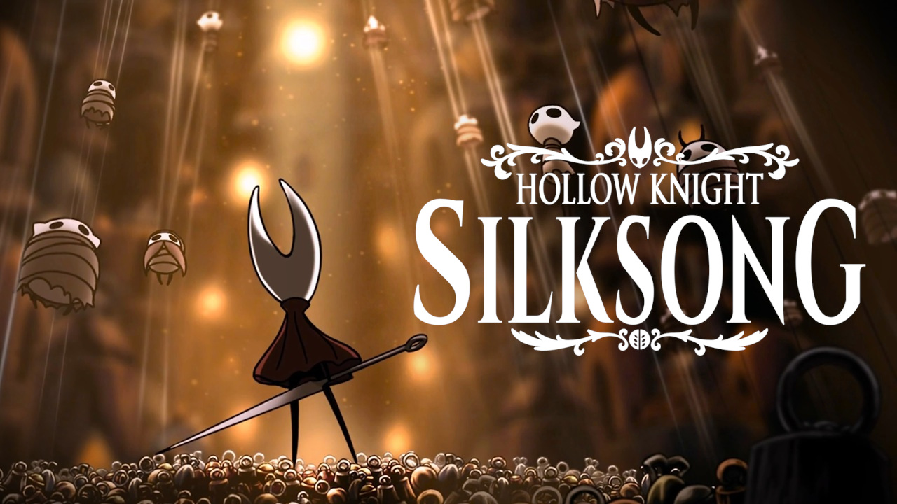

Sobre o jogo

A história se passa após os eventos do jogo original. Hornet é emboscada, capturada e acorrentada por um misterioso grupo de insetos velados que carregam cajados com sinos. Ela é transportada à força para Fiarlongo (Pharloom), um reino distante, vasto e arruinado.Ao contrário de Hallownest, governada pela energia do Vazio e da Luz, Fiarlongo é inteiramente regida por dois pilares: a Seda e a Música. O reino sofre com o "Assombro" (The Haunting), uma terrível loucura ligada à seda que corrompe a mente dos insetos e reanima seus cadáveres. Após o casulo de transporte ser quebrado em um acidente na base do reino, Hornet se liberta na Gruta Musgosa (Moss Grotto). Sem entender os motivos do seu sequestro, seu objetivo imediato torna-se cruzar o reino de baixo para cima até alcançar o topo da colossal Cidadela.